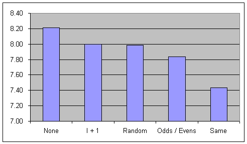
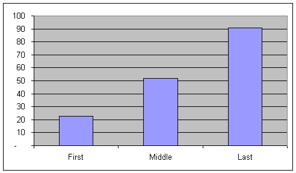

Your Turn
Random Serial Dictatorship with a Nemesis
Joel Grus
Social Science
California Technical Institute
Kyle A. Joyce
Political Science
The Pennsylvania State University
July 13, 2005
Problem
A group of, say, ten students each need to give a five minute talk, one after the other. The order of presentations is not specified. What happens?
Model, using whatever techniques you wish, the above scenario.
Explicitly state your model and key assumptions.
Summarize key results.
Suggest some potentially interesting future directions and questions for the
model.
Suggest some standard social science scenarios that could be usefully modeled using such a process.
Model
We viewed this problem as a one-sided matching problem; 10 presentation slots needed to be filled by ten students. We assumed that students had preferences over both the slot in which they presented and the presenter immediately preceding them.
Student Types
Our first assumption was that students have preferences over the order in which they present. Some students might prefer going toward the beginning, others prefer going somewhere in the middle, and some prefer going towards the end. We represented these preferences by creating three types of agents.
1) Prefers going toward the beginning
2) Prefers going in the middle
3) Prefers going toward the end
The following table lists each student type's ranking of the possible presentation slots, from most-preffered to least-preferred.
| Student Type 1 | Student Type 2 | Student Type 3 |
| 1 | 5 | 10 |
| 2 | 6 | 9 |
| 3 | 4 | 8 |
| 4 | 7 | 7 |
| 5 | 3 | 6 |
| 6 | 8 | 5 |
| 7 | 2 | 4 |
| 8 | 9 | 3 |
| 9 | 1 | 2 |
| 10 | 10 | 1 |
Nemesis
If these were the students' only preferences, then a random serial dictatorship would produce an optimal allocation. The instructor randomly selects one student, who chooses her most-preferred slot. Then the instructor randomly chooses another student, who chooses his most-preferred slot from those remaining. This process continues until all students have chosen.
However, we also assume that each student might have a "nemesis" -- a student whom they don't want to immediately follow. It's easy to imagine, for instance, that no one wants to present immediately after John Miller. We assume that presenting immediately after your nemesis is the worst of all possibilities. We examine five nemesis scenarios:
1) Each student has no nemesis
2) Each student has the same nemesis
3) Half the students have one nemesis, the other half have another
4) Each student's nemesis is the next student (e.g., 1 fears 2, 2 fears 3, ...
, 10 fears 1)
5) Each student's nemesis is chosen randomly
Random Serial Dictatorship
As mentioned above, the basic selection process is a random serial dictatorship.
We randomly choose a permutation of the students and allow them to pick their
most-preferred slots in that order.
Student Strategies
Every time an agent chooses a slot, all the agents who have picked previously have the option of abandoning their slots. We consider two different abandonment strategies:
1) Abandon your slot if your nemesis has picked the slot immediately preceding
you.
2) Abandon your slot if a more preferred slot is empty or if your nemesis has
picked the slot immediately preceding you.
If a student abandons her slot she moves to the end of the choosing order and chooses a new slot after all other students have chosen.
Student Scores
Each student receives a score for the slot they have to present in. Students receive a ten if they obtain their first preference, a one if their receive their last preference, and a zero if their nemesis presents immediately before them.
| Student Type 1 | Student Type 2 | Student Type 3 | Score |
| 1 | 5 | 10 | 10 |
| 2 | 6 | 9 | 9 |
| 3 | 4 | 8 | 8 |
| 4 | 7 | 7 | 7 |
| 5 | 3 | 6 | 6 |
| 6 | 8 | 5 | 5 |
| 7 | 2 | 4 | 4 |
| 8 | 9 | 3 | 3 |
| 9 | 1 | 2 | 2 |
| 10 | 10 | 1 | 1 |
| Nemesis | Nemesis | Nemesis | 0 |
Experiment
The experiment proceeds as follows:
1) Randomly assign a type to each student
2) Randomly assign the order in which the students choose their slots
3) For each nemesis & strategy scenario, repeat the following until all
agents have slots:
a) Each agent chooses the remaining slot which is most preferred
b) After each selection, agents decide whether to abandon their slots
4) Calculate scores
This process was repeated for 10,000 simulations.
The python code used is available here.
Results
Average Score by Nemesis Scenario

Having no nemesis results in a higher average score than any of the other nemesis scenarios.
Average Score by Student Type & Nemesis
Nemesis Type |
||||||
| No Nemesis | Same Nemesis | Odd/Even | Next Student | Random | ||
| Student Strategy |
First | 8.13 | 7.70 | 8.02 | 8.10 | 8.10 |
| Middle | 8.23 | 7.39 | 7.85 | 8.04 | 8.02 | |
| Last | 8.28 | 7.22 | 7.63 | 7.85 | 7.85 | |
| Total | 24.64 | 22.31 | 23.5 | 23.99 | 23.97 | |
Students who prefer going last are hurt more by having a nemesis compared to the other two student types.
Distribution of Scores by Nemesis Scenario
Most students get one of their top four slots.
Count of Zero Scores by Player Type

Students who prefer going last are much more likely to end up presenting immediately
after their nemesis.
Conclusions
1) Having a nemesis hurts you, and having the same nemesis as everyone else
hurts you even more.
2) With random preferences, most students get one of their top 4 choices.
3) Preferring to present early is a good way of avoiding your nemesis.
4) Choice of strategy had no significant effect on the student's scores.
Possible Extensions
1) Multiple nemeses.
2) Two-sided nemises preferences -- agents don't want to present immediately
before or after nemesis
3) Less-restrictive preferences -- maybe an agent doesn't want to go first but
would like to go second.
Other Social Science Scenarios
1) Housing allocation when you care about who your neighbor is. For example,
you might not want to live downwind from someone who never showers.
2) Seating in a full theatre. For example, you might not want to sit next to
someone who never showers.